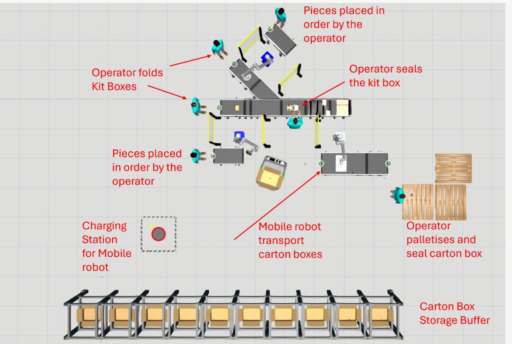
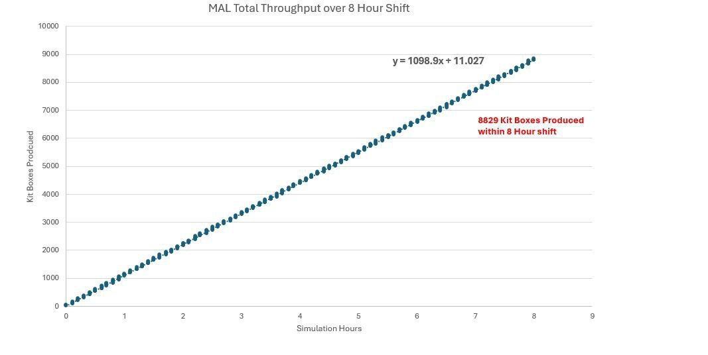
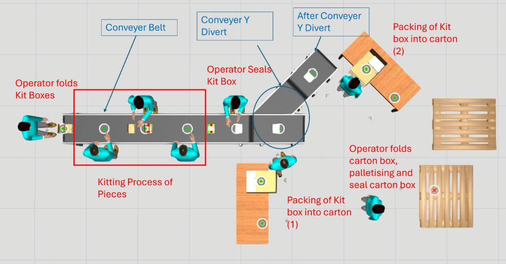
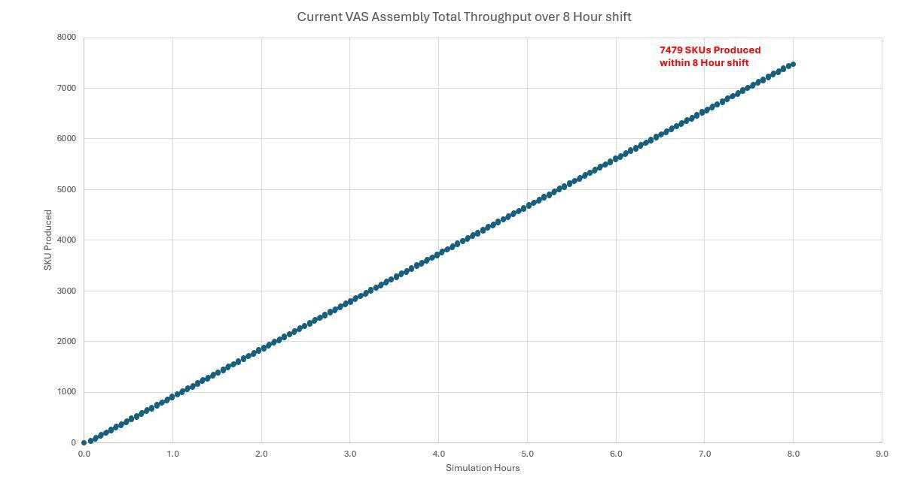
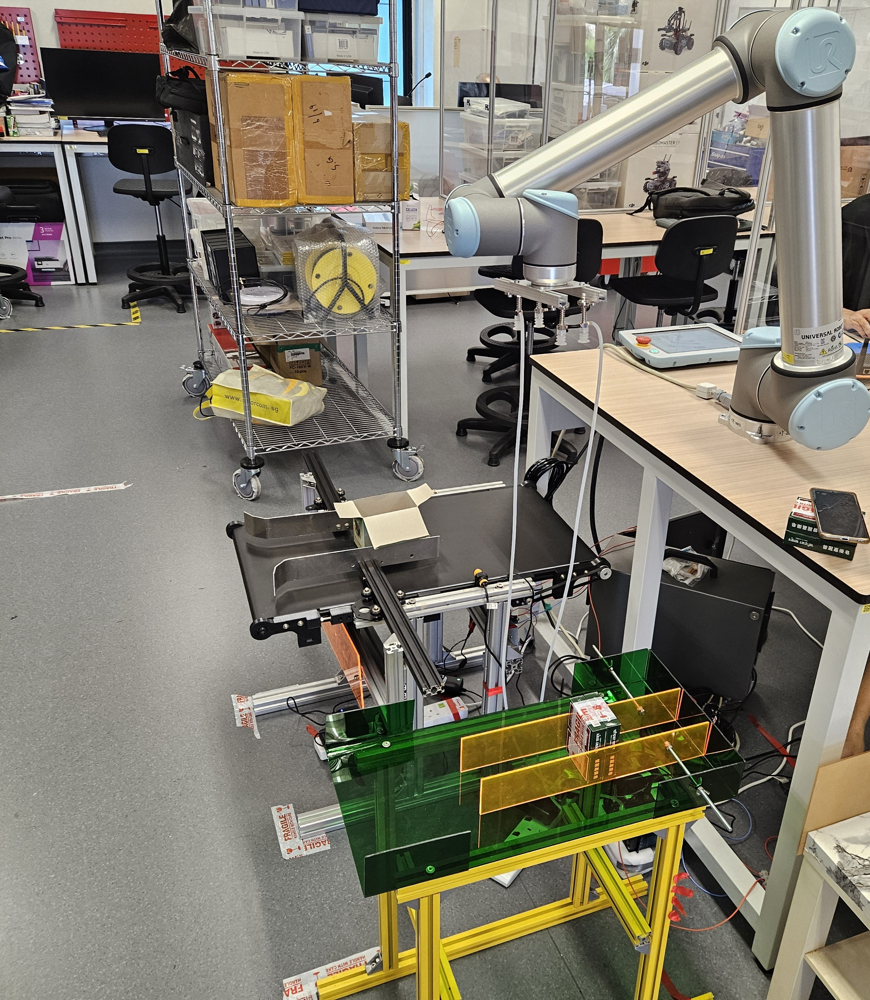

Bolloré Logistics — Assembly Line Automation
In collaboration with Bolloré Logistics, this project aimed to overhaul the Value-Added Services (VAS) assembly line. By integrating robotics and autonomous systems, we modeled and physically demonstrated a transition to a Modular Assembly Line (MAL), showcasing significant productivity improvements and reduced reliance on manual labor for High-Mix Low-Volume (HMLV) operations.

1. The System & Simulation Validation
We modeled both the legacy Assembly Line (AL) and our proposed Modular Assembly Line (MAL) in Visual Components to mathematically prove throughput improvements.
MAL Simulation

MAL Throughput

Legacy AL Simulation

Legacy AL Throughput

Real-World Demonstration
We physically verified the simulated test cases using a UR10 robotic arm for kitting/cartoning and an AgileX LIMO AMR for inter-station transport.
2. System Architecture & Control
We applied Arcadia and Capella methodologies to define the solution architecture. For the physical execution, we scripted UR10 6-axis kinematics using the RoboDK Python API.
Arcadia Architecture

System Overview (OV-1)

RoboDK Kinematics

Latent Path Checking

3. Prototyping & Fabrications
To enable the UR10 and LIMO to handle complex tasks, we engineered and fabricated custom hardware solutions including a Variable Conveyor Belt, an STM32-driven servo flap mechanism for the AMR, and a custom vacuum end-effector.
Variable Conveyor Belt

LIMO Interface (STM32)

Vacuum Motor Housing

Physical Validation
